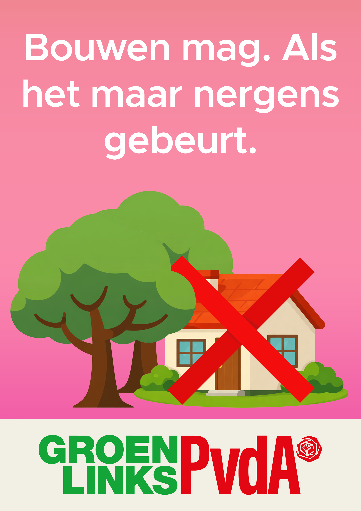

Deze poster speelt in op de spanning binnen GroenLinks-PvdA tussen woningbouw en natuurbescherming. Met de slogan “Bouwen mag. Als het maar nergens gebeurt.” wordt op satirische wijze gesuggereerd dat strengere regels en idealen het bouwen van nieuwe woningen in de praktijk bemoeilijken.
De afbeelding van een huis met een rood kruis, midden in het groen, versterkt dit beeld: bouwen is toegestaan, maar lijkt tegelijkertijd onmogelijk gemaakt te worden.